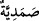
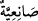
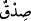
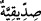
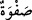

kitabım hakkında şüphe içindedirler. Hayır! Azabımı henüz tatmadılar.
9. Yoksa azîz ve lütufkâr olan Rabbinin rahmet hazineleri onların yanında mıdır!
10. Yahut göklerin, yerin ve ikisi arasında bulunanların hükümranlığı onların
elinde midir? Öyleyse (göklerin) yollarında yükselsinler (görelim)!
11. Onlar, çeşitli guruplardan oluşmuş bir ordudur; işte şurada bozguna
uğratılacaklardır.
12. Onlardan önce Nuh kavmi, Âd kavmi, kazıklar sâhibi Firavun, peygamberleri
yalanladılar.
13. Semûd, Lût kavmi ve Eyke halkı da yalanladılar. İşte bunlar da
(peygamberlere karşı) birleşen topluluklardır.
14. Onların her biri gönderilen peygamberleri yalanladılar da bu yüzden
(kendilerine) azâbım hak oldu.
“Sâd” Benzeri ifâdelerde olduğu gibi ibârede yer almayan (mahzuf) bir mübtedânın
haberidir. Yâni “Bu sûre Sâd sûresidir” demektir. Bazılarına göre, hurûf-i mukattaa
kâfirleri susturmak içindir. Çünkü Hz. Peygamber (s.a.) ne zaman namazda veya namaz
dışında sesli olarak Kur’ân okusa, kâfirler inatları yüzünden ıslık çalar ve ellerini
birbirine vururlardı. Böylece Hz. Peygamber’in yanlış okumasını sağlamaya
çalışırlardı. Hak Teâlâ o kâfirler işitip düşünsünler ve peygamberi yanıltma çabasından
geri kalsınlar diye “Sâd” gibi hurûf-i mukattaaları göndermiştir.
Şa’bî der ki: Allah’ın, bütün kitaplarında bir sırrı vardır. Kur’an’daki sırrı ise sûre
başlarındaki bu harflerdir.
Bazıları der ki: “Sâd”, Allah’ın “es-Sâdık, es-Sabûr, es-Sâni‘ ve es-Samed”
isimlerinin ilk harfi (miftâhı)dır.
et-Te’vîlâtü’n-Necmiyye’de der ki: Buradaki “sâd”ın; Allah’ın Samediyyetinin (
)
sâd’ı üzerine ezeldeki, Sâni’iyyetinin (
) sâd’ı üzerine ezel-ebed arasındaki ve
Sabûriyyetinin (
) sâd’ı üzerine ebede kadarki kasemine işâret eder. Ayrıca sıdkı
getiren zâtın sıdkının (
) sâd’ı, bu sıdkı tasdik eden zâtın sıddîkıyyetinin (
) sâd’ı
ve sıddîkın sıdkı getiren zâta duyduğu sevgi ve muhabbetindeki safvetin (
) sâd’ı
üzerine etmiş olduğu yemine de delâlet eder.
Saîd b. Cübeyr der ki: Allah, iki sur arasında canlıları bu sâd ile diriltecektir.
İbn Abbas (r.anhüma) der ki: “Sâd, Mekke’de bir deniz idi ve üzerinde Rahmân’ın
arşı vardı. Zira orada ne gece ve ne de gündüz vardır.
Güvenilir bazı kaynaklara göre de “Sâd”, Mekke’deki bir dağ idi. Bu görüşün îzahı,
“Elif Lâm Mîm Sâd”ın (A’râf sûresi) baş tarafında geçti.
Sâd ile ilgili şu da ifâde edilmiştir: “Sâd’ın mânâsı, İnsânü’l-uyûn’da da
kaydedildiği gibi şöyledir: Hz. Muhammed (s.a.), insanların gönüllerini kazanıp/avlayıp